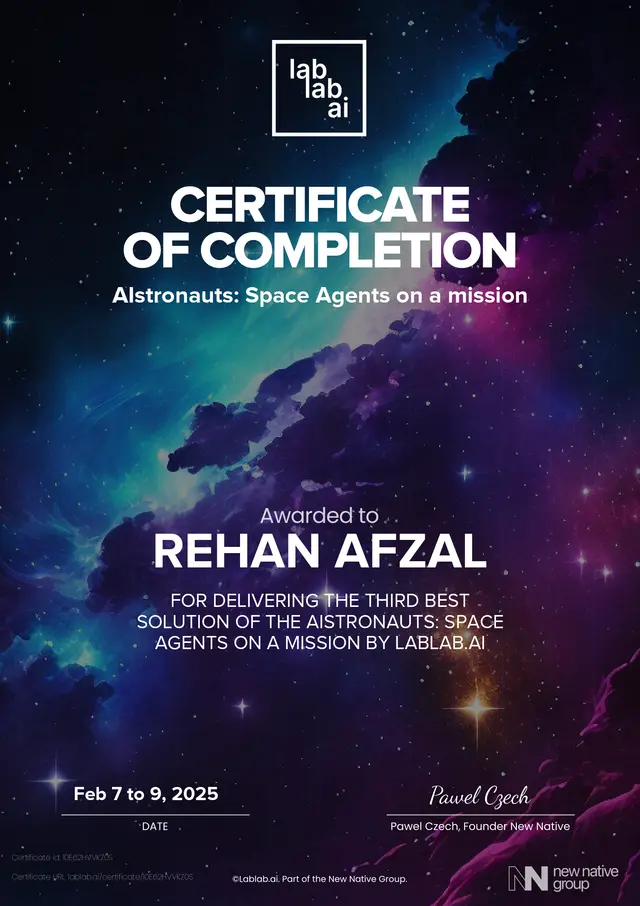
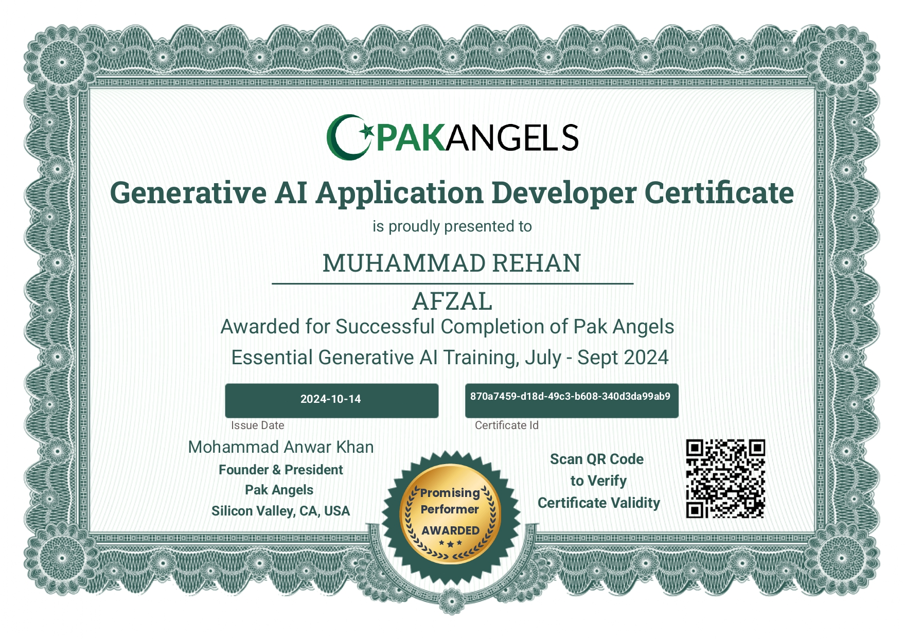
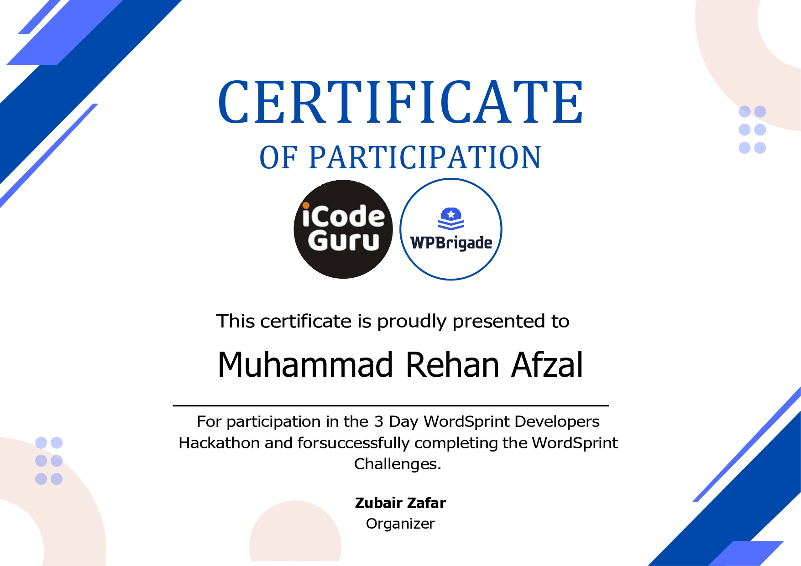
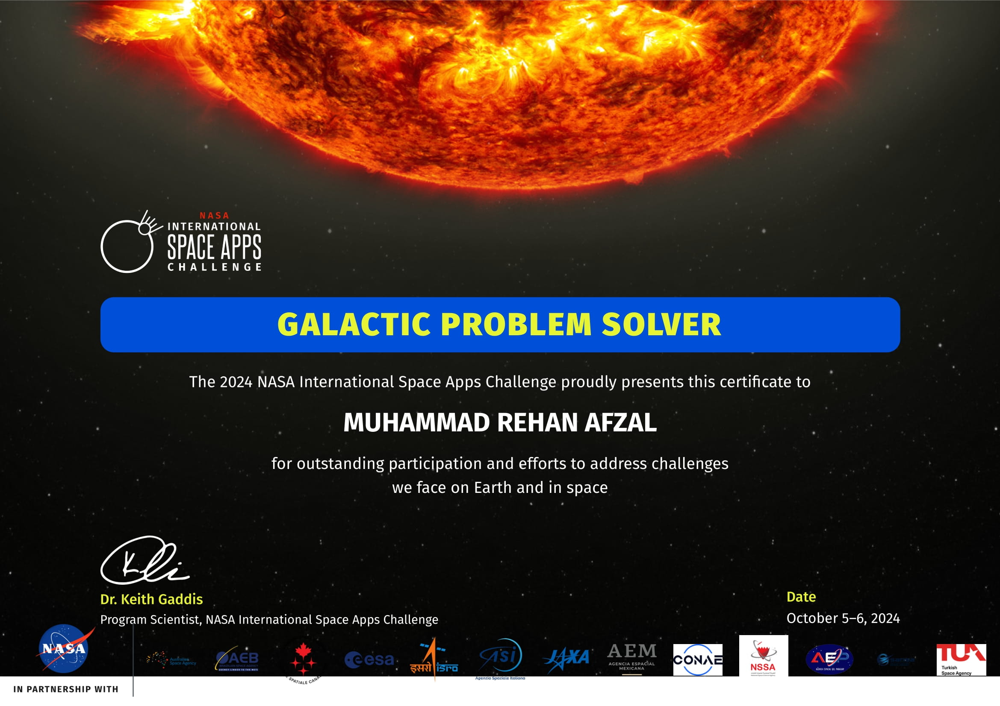

Research & engineering
Research & projects
Computer vision research, complemented by speech, language, and deployed AI applications.
Current research
Computer vision · ICMLA 2026
Fingerphoto Deblurring Using Wavelet-Guided TransformerNet
Restoring blurred contactless fingerprints while preserving the ridge structure needed for biometric recognition.
Our framework combines a Stationary Wavelet Packet Transform (SWPT), Whitening and Coloring Transform (WCT) guidance, and a Restormer-style encoder–decoder. Identity-aware supervision complements image reconstruction.
Generative AI · Ongoing research
Identity-preserving controllable face generation
Investigating how diffusion models can preserve a person’s identity while following edits to pose, expression, age, and context. The research explores instruction-aware identity guidance and evaluation that distinguishes identity preservation from copying the reference image.
Speech & NLP
Speech recognition and recitation verification
Published research examining speech-recognition techniques and a framework for verifying Quranic recitation. This work provides the speech and language foundation alongside my current computer vision research.
From ideas to applications
Selected engineering projects

Applied AI · Hackathon
Autonomous Resource Management System
Built a prototype for monitoring astronaut health and resource levels using Prophet forecasts, a Streamlit interface, and a FastAPI backend. Integrated the Groq API for emergency recommendations.

Applied AI · Energy
AI Smart Grid System
Developed a Streamlit and Plotly dashboard for power consumption, renewable generation, grid health, and storage. Integrated weather data and simulated energy trading to explore load-management decisions.

Web development · Team leadership
World Hackathon 2024
Led project-submission coordination and contributed a payment plugin using REST APIs for a web application.

Science communication · Web development
NASA Space Apps Challenge 2024
Created a WordPress website and video collage to explain James Webb Space Telescope observations through visual storytelling.

NLP · Aya Weekend Challenge
Multilingual Translation
Built a Streamlit translation application supporting 24 language pairs with Helsinki-NLP MarianMT models, Hugging Face Transformers, and PyTorch.
Hackathons & coding competitions
Team projects, algorithmic problem solving, and international participation.
View achievements →